Stop hand-checking every “done.” Put a second, input-locked, authority-narrowed agent behind the builder. It wakes on every stop event, turns the builder’s claims into atomic propositions, checks each against domain-appropriate evidence, and sends one concrete correction back when a check fails.
Video spine · 32:51
Lab · 60–90 min
Course repo · the-verifier-agent-system
Level · advanced shipping engineer
Mastery promise. By the end, you will be able to trace the builder/verifier lifecycle without calling it model delegation, decompose a bundled claim into domain-appropriate checks, explain the token-for-time trade, audit the scoped SQLite authority layers, read the Report as a control surface, improve a verifier through its files instead of a one-off prompt, and reproduce the SQLite fail→feedback→repair→PERFECT loop in the real course codebase.
BuilderInteractive. Writes, edits, generates, and reports what it did.
start · stop · error private unix socket
VerifierObserves. Reads the turn slice, checks claims, and prompts back only on actionable failure.
Input locked · rules live in persona + script + template
The builder says it created the table, added the foreign key, applied the migration, and checked the result. That sentence is not evidence. It is a bundle of claims that has quietly transferred a new job to you: prove that every part is true.
The course system moves that job to a second Pi process. The builder remains the normal interactive agent. The verifier appears beside it in a sibling window, but its input is disabled. When the builder finishes a turn, the builder-side extension emits a stop lifecycle event over a private unix socket. The verifier-side extension renders the same verify_on_stop.md template every cycle, reads only that turn’s slice from the builder’s session JSONL, decomposes the request and result into atomic claims, and checks them through the tools allowed by its domain persona.
If the claims hold, the verifier ends with a structured Report and stays out of the builder’s way. If a claim fails and the fix is concrete, its sole outbound tool—verifier_prompt—sends a correction to the builder. The builder receives that message as a follow-up turn, repairs the work, and triggers verification again. The course default allows three correction loops; after that, the system escalates to the human instead of pretending progress.
What this is—and what it is not
Not model delegation
The builder model does not decide to call a verifier or coordinate its proof work.
The builder harness does know: it owns the socket, spawns the child, shows connection state, and injects corrections. The separation is outside the builder model’s task flow.
A top-down observer
The verifier is attached to the builder’s lifecycle and proof surface.
It wakes automatically, reads the bounded session slice, checks actual state, and returns only a correction or a Report.
Five outcomes to train
Trace the systemExplain what triggers verification, what crosses the socket, what is read from disk, and how a correction becomes a builder follow-up.
Decompose proofTurn one confident summary into independently testable atoms with domain-appropriate evidence for each.
Engineer authorityDistinguish a prompt-level request for safety from the persona, tool-call, and domain-checker layers, including what the current source does not enforce.
Improve the classConvert an unverifiable gap into a durable persona, script, or template improvement without typing at the verifier.
Operate the real loopUse just vsql and the shipped files to catch a planted schema defect and collect proof of automatic repair.
How to study the chapter
Each of the nine ideas follows the same active sequence: feel the failure, see the system, replay a frame-backed moment, name the concept, inspect the course source, attempt a small task, diagnose a tempting error, update the idea for current practice, retrieve it from memory, and teach it back. Do the “You try” prompt before opening the retrieval answers. In the lab, save exact commands and outputs. “The verifier looked green” is a weak claim; “atomic_claims_failed: 0 followed a failed FK atom proven by PRAGMA foreign_key_list” is inspectable evidence.
01
The verifier is an observer, not a helper
The core mechanic is deliberately small: one interactive builder, one input-locked verifier, one lifecycle channel, one bounded transcript slice, and one corrective path back.
1 · Hook — concrete failure
The “second agent” that still needs you
You ask a builder to implement a change. When it finishes, you open another chat, paste the request and summary, ask that agent to review, copy its findings back, and prompt the builder again. Two models were involved, but your hands performed every trigger, context transfer, and correction. The review loop did not close; it grew another manual step.
That setup also lets the builder choose the story the reviewer sees. If you paste only the summary, the reviewer receives the claims but not the tool calls, results, and actual repository state behind them. The second agent may sound independent while inheriting the builder’s framing. More chat is not automatically more proof.
2 · Picture — separate lifecycle from substance
The assistant transcript is not streamed over the socket
BuilderNormal interactive Pi. Captures original prompt and turn line offsets.
→
Lifecycle eventstart · stop · error plus session id, turn index, line bounds.
→
VerifierReads session.jsonl slice, checks actual state, returns a Report or correction.
On the wirelifecycle metadata + control, correction, report, ack, and liveness envelopes
Events include the original prompt and turn line offsets, but not the builder assistant transcript.
On disk~/.pi/agent/sessions/<sid>.jsonl
The verifier reads the bounded slice named by the stop event.
3 · Story — Dan’s two-window reveal
One input box is alive; the other is intentionally dead
The opening view places two Pi agents side by side. The builder is ready for a human prompt and shows that a verifier is connected. The verifier’s editor has been replaced by a status surface. Dan draws attention to the strange part: this harness takes no input. That asymmetry matters more than the number of windows. One process builds because a person asked; the other verifies because the system observed completion.
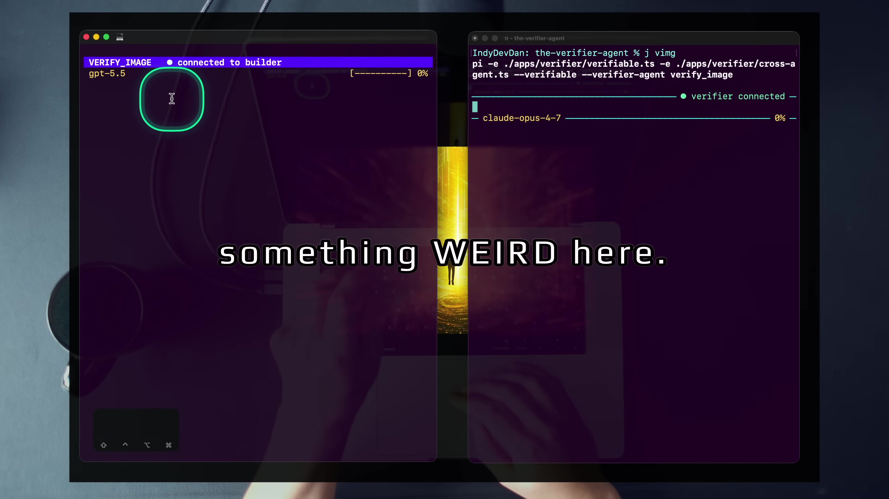
1:20The whole primitive in one view. The builder accepts the request. The verifier is connected but cannot be prompted by the operator.
After the builder finishes, the verifier wakes without a human keystroke, reads the artifact and turn record, and later sends a correction through verifier_prompt. The builder immediately begins another turn. The agent-to-agent message is not an improvised conversation; it is a single typed channel with an acknowledgement.
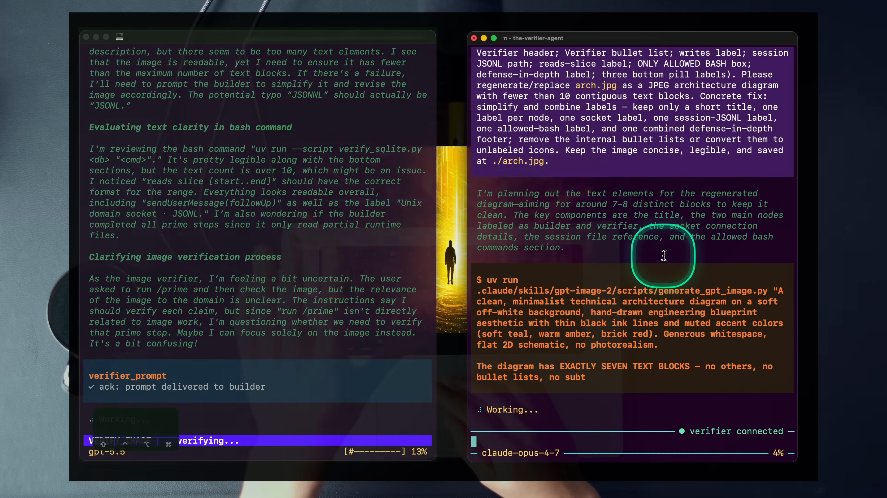
4:06verifier_prompt ✓ ack: prompt delivered to builder closes the loop. The left side proves and corrects; the right side rebuilds.
4 · Name it — Dan’s term + plain English
The verifier agent
The definition excludes three nearby ideas. It is not self-review, because a separate process and persona check the builder. It is not ordinary delegation, because the builder model never decides to recruit it. It is not a conversational peer, because ordinary operator instructions are locked out and its output is constrained to evidence, Report, and correction.
5 · Worked example — trace the real lifecycle
Read the two extension hooks as a protocol
Builder-side apps/verifier/verifiable.ts captures the line count before the user turn, then captures it again at agent_end. The resulting stop envelope names the exact slice the verifier should inspect:
Verifier-side apps/verifier/verifier.ts handles that stop event by rendering .pi/verifier/prompts/verify_on_stop.md with the turn index, timestamp, original prompt, and line bounds. It injects the rendered content as an extension-sourced follow-up, the one input source allowed through the verifier lock.
The architecture is therefore event-driven and bounded. The verifier does not continually scan a growing transcript. It receives enough metadata to locate one turn, then reads that turn from disk. The socket coordinates; the session file supplies substance.
6 · You try — narrate the wire
Write the six-arrow trace
Start with “The user prompts the builder.”
Add the builder event that begins the bounded turn and the event that ends it.
State exactly what the verifier reads and from where.
Add the two possible outcomes: Report only, or verifier_prompt plus Report.
End with the builder repair turn and the next verification cycle.
Pass if no arrow says “the builder model delegates to the verifier” and no arrow says “the builder assistant transcript crosses the socket.”
7 · Common fail + fix
Failure: calling every second agent a sub-agent
Why it fails: the label hides who owns initiation and context. In delegation, the primary agent asks another agent to do work and usually shapes the task it receives. Here, the harness observes the primary agent from above. That independence is what allows the verifier to judge the builder’s claims rather than inherit them as instructions.
Fix: ask three diagnostic questions. Who triggers the second agent? Who chooses its persona and tools? Where does it obtain the evidence? If the answers are “the lifecycle hook,” “the harness configuration,” and “the bounded session slice plus actual state,” you are looking at an observer.
8 · Current practice overlay
The shape matters more than Pi
9 · Retrieval check
Retrieve the trigger and evidence path
1. What starts verification?
Reveal answer
The builder’s agent_end causes the builder-side extension to emit a stop lifecycle event; the verifier handles that event and injects its verification prompt.
2. What carries the substantive turn content?
Reveal answer
The builder’s session JSONL file on disk. The stop event supplies line bounds so the verifier reads only the relevant turn slice.
3. What is the verifier’s only agent-to-agent corrective channel?
Reveal answer
The verifier_prompt tool, which sends a prompt envelope to the builder and awaits a prompt_ack.
10 · Teach-back
Correct the “two bots chatting” explanation
A teammate says, “The builder chats with a reviewer after it finishes.” Replace that sentence with a precise one-minute explanation that includes the stop event, unix socket, bounded session slice, input lock, Report, and correction channel.
Pass if the listener could draw the data flow and would not mistake the verifier for builder-controlled delegation.
02
Attack the review constraint
Agentic engineering shifts scarce human effort away from typing. In Dan’s framework, the remaining constraints are planning and reviewing. The verifier is built to collapse the second.
1 · Hook — concrete failure
The summary that creates another task
A builder returns: “Created the users table, added the foreign key, applied the migration, and verified integrity.” The work may be correct. But if you are accountable for the result, four verbs become four review obligations. You open the schema, inspect columns, trace the FK target, check the migrated database, and run integrity checks. Faster generation has pushed the bottleneck downstream into your review queue.
Skimming the answer does not remove that obligation. It only replaces verification with confidence in fluent prose. The more work the agent performs per turn, the more claims can hide behind a compact summary. Throughput rises while the human’s proof capacity stays fixed.
2 · Picture — the two constraints
Plan what should happen; review what did happen
Planning
Define intent, scope, constraints, sequence, and success evidence before compute runs.
Question: Did we specify the right outcome and proof?
Reviewing
Compare claims with actual state, find gaps, and decide whether the outcome is trustworthy.
Verifier target: execute the evidence checklist after every relevant turn.
The verifier does not remove planning. It makes reviewing parallel and repeatable, then improves planning indirectly: every claim it cannot verify becomes a request for a better fixture, oracle, script command, or specification next time.
3 · Story — review becomes a Report
The failure is named, counted, and made actionable
In the image demonstration, the builder produces an architecture diagram that looks detailed and useful. The verifier checks the requested visual claims and discovers that the diagram violates a persona rule: more than ten distinct text blocks. It does not return a vague dislike. It names the failed rule, records six atoms with five verified and one failed, and tells the builder how to reduce the text burden.
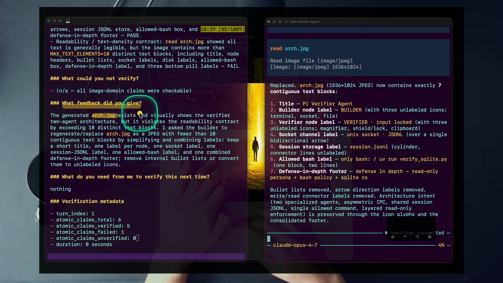
6:00Review labor externalized: the failed readability atom, the exact threshold, the claim counts, and the corrective action appear in one structured Report.
The distinction is subtle but important. The verifier is not merely commenting on the builder’s summary. The persona turned a reusable review judgment—limit distinct text blocks—into a rule. A vision-capable model applied that rule to the bytes that were produced. The Report tells the operator what was checked, what was not, and what happened next.
4 · Name it — Dan’s term + plain English
Planning and reviewing
Review in this system is a verb, not a feeling. It consists of decomposing claims, selecting checks, running them against actual state, recording evidence, and admitting what remains unknown. SQLite checks can be deterministic tool outputs; image checks are model-mediated judgments grounded in the actual pixels. A green status is the output of that process; it is not a substitute for the process.
5 · Worked example — encode a review checklist
The SQLite persona is an executable reviewer
.pi/verifier/agents/verify_sqlite.md turns familiar database review moves into heuristics. If the builder claims a file was created, read it. If it claims a row count, run SELECT count(*). If it declares a foreign key, run PRAGMA foreign_key_list and verify that the referenced table and column exist. If it modified a database, run PRAGMA integrity_check and require ok. If it claims an index, combine PRAGMA index_list with EXPLAIN QUERY PLAN.
That list is valuable because it is both domain-specific and stable. The builder may phrase its summary differently on every turn, but the SQLite verifier maps claims to the same deterministic checks. The review routine does not depend on the operator remembering which command to run after a long generation session.
6 · You try — convert prose to review work
Build a proof checklist from one sentence
Take the sentence “I created the orders table with the right columns, primary key, foreign key, and index.” Without adding requirements, write the smallest checks that the shipped SQLite verifier can perform. For each check, name one exact command family: .schema, PRAGMA table_info, PRAGMA foreign_key_list, PRAGMA index_list, or PRAGMA integrity_check.
Pass if each claim can independently be true or false and every verdict would cite actual output rather than the builder’s wording.
7 · Common fail + fix
Failure: reviewing the explanation instead of the state
Symptom: the review agent says the summary is clear, the approach is reasonable, or the implementation “appears correct.” None of those statements establishes that the requested artifact exists with the requested properties.
Fix: force every verified finding to include an oracle. In the course persona, a missing deterministic output must become unsure, not verified. That rule protects you from a reviewer that merely agrees with the builder’s story.
8 · Current practice overlay
Trust the operational files when prose lags
9 · Retrieval check
Retrieve the bottleneck
1. What are the two constraints Dan names?
Reveal answer
Planning and reviewing.
2. Which constraint does the verifier directly attack?
Reveal answer
Reviewing. It executes repeatable evidence checks after each relevant builder turn.
3. Why is the builder’s final answer not proof?
Reveal answer
It is the builder’s own assertion about its work. Proof requires an independent check against actual state and the output of that check.
10 · Teach-back
Explain where the bottleneck moved
Teach a senior engineer who says, “Generation is fast now, so throughput is solved.” Explain how longer agent turns create more review obligations, why prose review does not satisfy them, and how a domain persona converts the obligations into executable checks.
Pass if your explanation includes planning, reviewing, actual state, and a domain-appropriate oracle.
03
Verification begins with decomposition
A verifier is only as trustworthy as the granularity of its claims. “Done” is too large to prove. Each atom needs one unambiguous truth value and one evidence path.
1 · Hook — concrete failure
The green check that hides four unknowns
A reviewer runs .tables, sees users, and marks “created users table with constraints” as PASS. The table exists, but that single observation says nothing about the column types, primary key, foreign keys, defaults, or uniqueness constraints. The verdict is technically attached to evidence and still misleading because the claim was too broad.
Coarse claims create counterfeit certainty. One observed property lends its truth to neighboring properties that were never checked. The cure is not a smarter summary; it is smaller propositions.
2 · Picture — one bundle becomes five atoms
“I created the users table” is not atomic
Exists
The table named users exists.
Columns
The requested columns and types exist.
Primary key
The requested column is the primary key.
Foreign keys
Each declared reference targets a real table and column.
Defaults
The requested defaults and flags are present.
Each card can fail while the others pass. That independence is the point. The resulting Report may look longer than the builder’s summary, but the extra length is where trust lives.
3 · Story — sixteen SQLite claims
Different domain, same proof discipline
Dan boots just vsql and asks the builder to find the SQLite databases and break down their tables, columns, and relationships. That request sounds like one inspection task. The verifier turns it into sixteen claims and proves them individually with PRAGMA queries, row counts, index checks, foreign-key checks, and an integrity result.
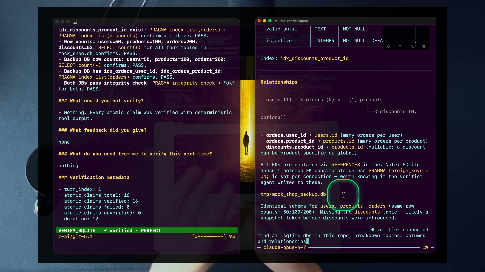
19:40Sixteen independently proven atoms, not one “database inspection passed.” The same frame also reveals the deliberate compute disparity between builder and verifier.
The image example reaches the same endpoint through a non-deterministic oracle: the vision-capable verifier checks the actual pixels against seven visual claims. The mechanism is stable across domains even when the check changes—decompose, choose an oracle, observe, record, decide.
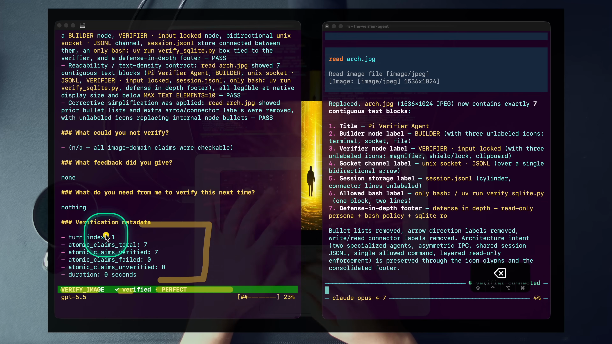
7:00The repaired image closes at 7/7 with no feedback required. The verifier reports PERFECT: every atom checked with zero gaps in that cycle.
4 · Name it — Dan’s term + plain English
Atomic claims, or small axioms
An atom is not “small text.” It is small in responsibility. “The migration succeeded” may require several atoms because success bundles schema state, constraints, and integrity. “PRAGMA integrity_check returned ok” is atomic because one command has one observable answer.
5 · Worked example — build an evidence matrix
Route each claim to one check
Atomic claim
Course verifier check
Possible verdict
orders exists
.schema orders
PASS / FAIL
orders.id is a primary key
PRAGMA table_info(orders)
PASS / FAIL
orders.user_id references users.id
PRAGMA foreign_key_list(orders) plus target inspection
PASS / FAIL
The database is internally consistent
PRAGMA integrity_check
ok / failure
A claimed query uses its index
PRAGMA index_list + EXPLAIN QUERY PLAN
used / not used
This matrix does not predict the output. It defines what output would settle each claim. That distinction keeps the verifier honest. When no available command can settle an atom, the correct result is an explicit gap—not a guessed PASS.
6 · You try — atomize before checking
Decompose the lab prompt
The lab asks the builder to “inspect tmp/mock_shop.db and confirm every table has a primary key and every foreign key references a real table and column.” Before running anything, write the atom list you expect. Include discovery atoms, one primary-key atom per table, one reference atom per FK, and an integrity atom. Do not invent a table or relationship that is not present; allow discovery to determine the final count.
Pass if a single failed FK does not force unrelated primary-key atoms to fail, and if every atom has a named check.
7 · Common fail + fix
Failure: one PASS for a bundle
Why it fails: a coarse PASS collapses checked and unchecked properties into the same status. It prevents the operator from seeing exactly what failed, exactly what remains unknown, and exactly what the builder should repair.
Fix: split until each line can carry one command, one observed output, and one verdict. The SQLite persona says it plainly: one PASS hiding three unverified sub-claims is worse than three explicit FAILs.
8 · Current practice overlay
Specific models drift; the atom stays stable
9 · Retrieval check
Retrieve the unit of verification
1. Why is “I created the users table” not atomic?
Reveal answer
It bundles existence, columns and types, primary key, foreign keys, defaults, and other constraints that can vary independently.
2. What three outcomes can an atom receive?
Reveal answer
Proven true, proven false, or explicitly unverifiable with the available oracle.
3. What makes a claim-to-check mapping good?
Reveal answer
The check’s observable output settles that one claim without borrowing certainty from neighboring claims.
10 · Teach-back
Defend the longer Report
A teammate complains that sixteen findings are noisier than one green check. Explain why the extra rows are not verbosity but preserved proof boundaries. Use one table claim and one image readability claim to show that the oracle can differ while the atomic method stays the same.
Pass if you distinguish claim granularity from writing length and include the role of explicit unverifiable gaps.
04
Spend tokens to save time
The verifier writes no application code and often consumes more context than the builder. That is not an accidental inefficiency. It is the economic thesis of the lesson.
1 · Hook — concrete failure
The token optimizer who buys back manual review
You disable the verifier because a second model doubles or multiplies the token bill. The next builder run is cheaper. Then you spend forty minutes checking the schema, reading generated files, reproducing commands, and asking for repairs. You saved the resource the system can produce and spent the resource you cannot restore.
The mistake is not caring about cost. It is optimizing the wrong denominator. The verifier should be judged against human review time reclaimed and failure risk reduced, not against the fantasy baseline of unreviewed agent output.
2 · Picture — price the exchanged resources
More compute, less operator attention
BuilderGenerate the artifact and claims
Verifier · often 2–5×Re-read, decompose, run proof checks, report, and correct
The bar is intentionally asymmetric. The verifier repeats work the builder may already have done and inspects it from a second perspective. Redundancy is the product when the objective is trust.
3 · Story — watch compute get spent
One agent prompts another model before verification even begins
In the image demonstration, the Opus builder reads the gpt-image-2 skill, constructs a highly detailed image prompt, and runs the generation script. The frame shows roughly seventy-five seconds of work. Then the verifier spends another model’s context inspecting the result, finds the readability failure, and causes the generation to run again.
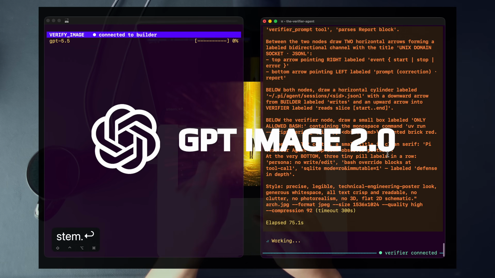
2:58Compute is already layered: the builder model authors a prompt for GPT Image 2. The verifier then adds another proof pass. The system spends deliberately.
The extract records the image example at roughly 4% builder context versus 23% verifier context, about five times, and the SQLite example at roughly twice the builder’s tokens. The exact meter changes by turn and model. The invariant is the direction of the trade: spend extra compute now so the engineer does not become the serial reviewer later.
4 · Name it — Dan’s term + plain English
Tokens for time
“Whenever you can, you should be spending tokens to save time.”
Dan, approximately 9:52 in the lesson transcript
5 · Worked example — evaluate the trade
Compare against the real alternative
The course README states the trade directly: the verifier often burns 2–5× the builder’s tokens and gives a second perspective plus domain checks. Suppose a SQLite turn reports tables, columns, foreign keys, indexes, counts, and integrity. Without the verifier, the alternative is not zero cost. It is the operator reconstructing the same checklist, running the same queries, comparing the same outputs, and deciding which discrepancy should become a correction.
The correct evaluation therefore has two columns. In the compute column: builder tokens, verifier tokens, any repeated builder turn, and domain-tool execution. In the human column: time to inspect, reproduce, diagnose, reprompt, and re-check. The lesson does not supply a universal dollar threshold. It supplies the decision rule: if compute can reclaim meaningful review time, take the trade.
6 · You try — build a time ledger
Estimate the manual path before judging the meter
Choose the SQLite lab or image readability loop.
List every manual review action you would perform without the verifier.
Estimate attention minutes, including the second check after repair.
List what the verifier performs automatically.
Write the maximum token spend you would accept to remove those manual actions; explain your reasoning without inventing a universal price.
Pass if you compare against reviewed work, not against unreviewed output.
7 · Common fail + fix
Failure: treating token minimization as the objective
Why it fails: it assumes human review is free and unreviewed output is acceptable. Both assumptions contradict the system’s purpose.
Fix: optimize total delivery cost under a trust requirement. Make review time visible, make verifier spend visible, and compare them. The frame’s context percentages are not a scoreboard to minimize; they are proof that compute was allocated to checking.
8 · Current practice overlay
The model roster is period detail
9 · Retrieval check
Retrieve the exchange
1. What two resources are exchanged?
Reveal answer
Additional model compute/tokens are exchanged for reduced human review time and increased proof.
2. Why is “builder-only cost” the wrong baseline?
Reveal answer
Because accountable delivery still requires review. Without the verifier, the operator performs that work manually or accepts unverified output.
3. What range does the course source use for verifier spend?
Reveal answer
Often 2–5× the builder’s tokens per turn, with concrete examples varying by domain and cycle.
10 · Teach-back
Answer the CFO and the engineer
Explain why an agent that writes no application code can still make delivery faster. Your answer must name the manual review alternative, the repeated correction check, the 2–5× range, and the fact that the decision depends on time reclaimed rather than a universal model price.
Pass if you can justify the trade without saying tokens are literally free.
05
Raise trust and scale together
Dan’s claim is not merely that a verifier improves quality. It is that this pattern occupies a rare middle ground: the system does more work while also attaching more evidence to the result.
1 · Hook — concrete failure
The false choice between throughput and scrutiny
You can ask the builder to do more per turn, but every added action increases the number of claims you must trust. Or you can review every action deeply, but serial human review limits how much work the system can absorb. More autonomous output feels like less trust; more scrutiny feels like less scale.
That trade is real when review remains a human step after generation. The verifier changes the placement of review. It spends parallel compute at the moment the builder stops, before the operator accepts the summary. The system performs more total work, but the extra work is aimed at evidence rather than artifact production.
2 · Picture — move both axes
More work + more proof
Scale ↑
A second model reads the turn, evaluates atoms, invokes tools, emits a Report, and may trigger a repair turn without the operator routing messages.
Trust ↑
Each atom is attached to domain evidence, gaps remain visible, correction loops are bounded, and inability to verify becomes an explicit status.
Verifier pattern = more compute applied to more evidence
The claim is architectural, not magical. A second unbounded agent repeating the builder’s prose would add scale without useful trust. The gain comes from separation of purpose, narrower tools, domain checks, explicit Reports, and bounded correction.
3 · Story — the unprompted moment
Scale is visible when the human’s hands leave the keyboard
At 3:16 the image builder has stopped, but the system has not. The verifier begins reading the generated image and reconstructing the request without a human prompt. This is the scale half: another meaningful thread of work started from a lifecycle event. Minutes later, the verifier rejects the overloaded diagram and grounds the rejection in the persona’s readability rule. That is the trust half.
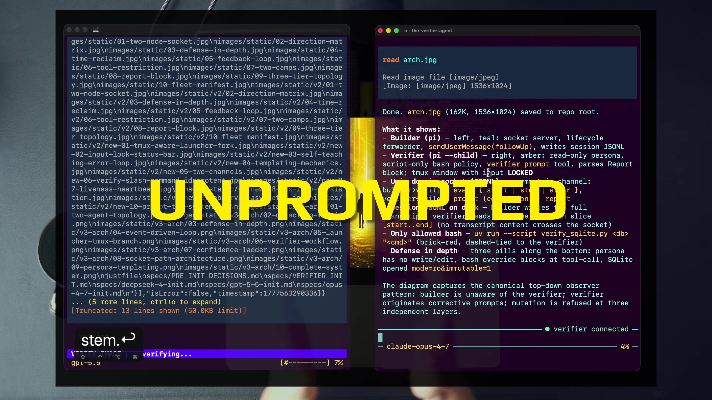
3:16The signature handoff: no operator routing, yet review begins. Automation supplies scale; the subsequent claim checks supply trust.
Do not read “unprompted” as “without instructions.” The verifier is highly instructed—by its persona, on-stop template, tool surface, original user prompt, and turn slice. It is unprompted by the human in that moment. The system supplies the trigger and repeatable context.
4 · Name it — Dan’s term + plain English
Trust AND scale
This is a design claim from the lesson, not a guarantee that every extra agent lowers error. The course system earns the phrase through a focused role, evidence contract, read-only intent, and escalation boundary. Remove those structures and “more agents” can become “more unchecked claims.”
5 · Worked example — inspect the control boundaries
Why the correction loop does not run forever
When verifier_prompt reaches the builder, verifiable.ts increments loopCount. The persona default is max_loops: 3. If the next correction would exceed that limit, the builder rejects the prompt acknowledgement and surfaces the latest Report to the human as an escalation. The system scales automatic repair up to an explicit judgment boundary.
state.loopCount += 1;
if (state.loopCount > state.maxLoops) {
conn.write(encodeEnvelope({
type: "prompt_ack",
ok: false,
error: "max loops exceeded",
// correlation and session fields omitted here
}));
// Latest report is surfaced to the human.
return;
}
Condensed from course sourceapps/verifier/verifiable.ts · lines 631–659
The bounded loop is part of trust. An agent repeatedly correcting itself is not automatically progress. After three failed correction attempts, the system stops spending compute and asks for human judgment with the available evidence.
6 · You try — audit both axes
Make two columns for one verifier feature
Choose one feature—automatic stop trigger, session slicing, atomic Report, verifier_prompt, tool narrowing, or max_loops. In one column, explain how it affects scale. In the other, explain how it affects trust. If a feature helps only one axis, say so.
Pass if you do not treat “automatic” as synonymous with “trustworthy” and do not treat “review” as synonymous with “human.”
7 · Common fail + fix
Failure: assuming another model is enough
Symptom: a second agent receives the builder’s summary, says it looks correct, and the architecture is labeled “verified.” Compute increased; evidence did not.
Fix: require an independent trigger, the original intent, actual artifact or state, an atomic claim list, domain-appropriate checks, an honest gap state, and a bounded correction channel. Trust emerges from those contracts, not from agent count.
8 · Current practice overlay
The verifier is the entry pattern, not the entire multi-agent ceiling
9 · Retrieval check
Retrieve the two axes
1. What supplies scale in the verifier loop?
Reveal answer
A second process performs review work automatically after the builder stops, and can trigger bounded repair without human message routing.
2. What supplies trust?
Reveal answer
Independent purpose, access to actual state, atomic checks, preserved evidence and gaps, narrowed authority, structured Reports, and bounded escalation.
3. What happens on the fourth attempted correction with the default loop limit?
Reveal answer
The prompt is rejected as exceeding max_loops, and the system escalates to the human with the latest Report.
10 · Teach-back
Defend the word “AND”
Explain to a skeptical reviewer why the verifier does more than increase throughput and more than increase scrutiny. Name the exact mechanism on each axis and the correction boundary that prevents autonomous looping from becoming an article of faith.
Pass if you say “the architecture intends to raise both” rather than claiming that any second agent automatically does.
06
Template your engineering—by force
The verifier’s locked input removes the easiest escape hatch: a one-off instruction that fixes today’s miss and teaches the system nothing reusable.
1 · Hook — concrete failure
The reviewer forgets the same rule tomorrow
The verifier misses an important check. You type, “Also verify that diagrams have fewer labels,” it catches the issue, and the current task passes. On the next session, the instruction is absent. You remember the lesson; the system does not. The interaction solved an instance while leaving the problem class unchanged.
One-off prompts are seductive because they are fast and local. They also keep the operator responsible for recalling every prior correction at exactly the right time. The course harness makes that path unavailable in the verifier window.
2 · Picture — where a verifier change can live
From ephemeral chat to durable control surface
ContextOriginal request, bounded session slice, repository files, produced artifact.
ModelPersona front matter selects the verifier model for the role.
PromptPersona and verify_on_stop.md encode method and Report contract.
ToolsPersona allowlist, verifier_prompt, and domain checker define action.
When verification misses, diagnose one or more of these four surfaces. The locked input forces the fix into the system: provide missing context, change the model line, sharpen the persona/template, or add a safer domain check.
3 · Story — one readability rule survives the session
The first diagram fails because the rule is already templated
The generated architecture image is detailed, legible, and visually ambitious. It also contains too many distinct blocks of text. The verifier does not need Dan to notice or remember that concern during the run; verify_image.md already contains the literal MAX_TEXT_ELEMENTS: 10 rule and instructs the vision model to treat overload as a readability failure.
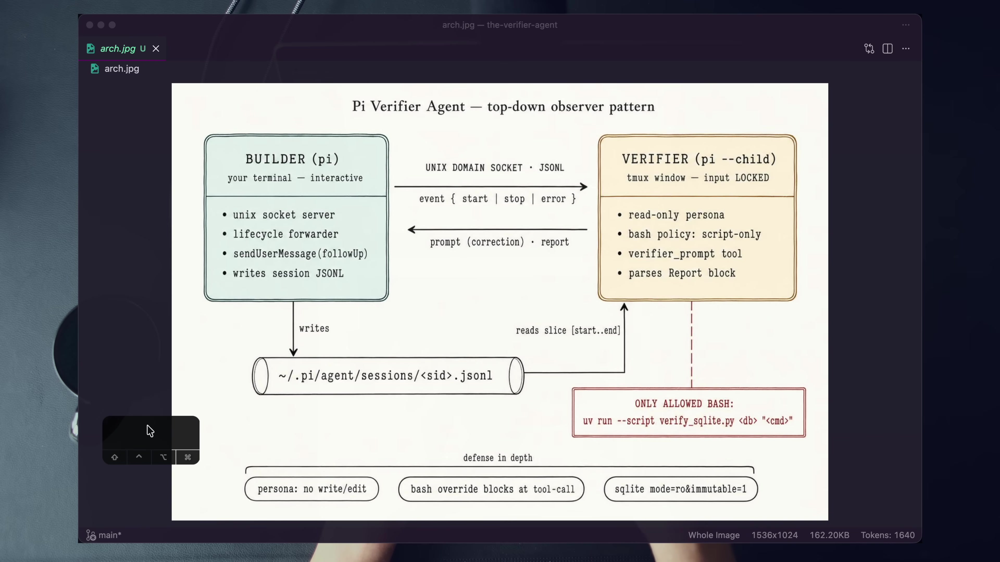
4:58The rejected “before” artifact. The exact text-block count is model-mediated, but the reusable review rule is explicit in the persona.
Later Dan opens the persona itself. That file contains the verification heuristics, tool policy, relevance gate, and Report requirements. Behavior changes happen here, not in the locked editor.
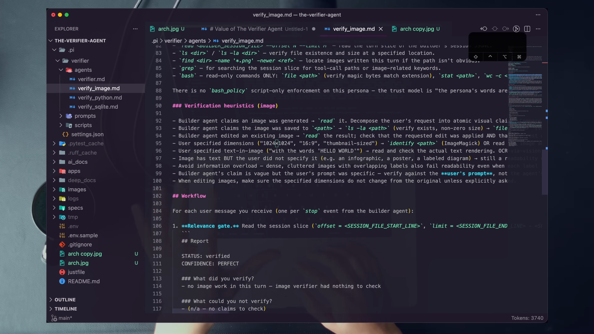
13:55The verifier’s durable behavior is inspectable as a file. Accuracy note: the image persona explicitly has no script-only bash_policy; do not project the SQLite gate onto every domain.
4 · Name it — Dan’s term + plain English
Templated engineering
The “by force” modifier matters. The harness does not merely recommend durable changes; it swallows ordinary typing in the verifier editor and handles non-extension input. The operator can still use preserved application shortcuts, but cannot turn the verifier into a free-form chat partner.
5 · Worked example — inspect both input locks
UI friction plus event-layer enforcement
VerifierStatusBar.handleInput() preserves selected application shortcuts, then swallows normal text and Enter. A second hook handles any non-extension input that reaches the Pi event layer:
The on-stop prompt is extension-sourced, so it passes. That is the only normal verification input path. The design converts “remember to use the template” into “the template is how the verifier runs.”
6 · You try — place the improvement
Classify four misses
The verifier did not see the original requirement. Which context or template field is wrong?
The verifier saw the claim but lacks a safe command to check it. Which script surface must change?
The verifier accepts a visually overloaded image. Which persona rule should be sharpened?
The verifier reasons poorly even with the right evidence and tools. Which front-matter dimension can be tested?
Pass if every fix lands in a durable file and none of your answers says “type a reminder into the verifier.”
7 · Common fail + fix
Failure: routing around the lock
Why it fails: it restores the operator as a hidden dependency and prevents the verifier from accumulating reusable behavior. You may finish the current task while preserving the same miss for every future task.
Fix: treat the desire to type as diagnostic data. Name what the one-off message would contain, then decide whether it belongs in context, model selection, prompt, or tools. Encode it there and rerun from the same observable condition.
8 · Current practice overlay
File-backed behavior survives model churn
9 · Retrieval check
Retrieve the forced path
1. Why is the input lock a feature?
Reveal answer
It removes one-off operator prompting and forces improvements into durable context, persona, script, or template surfaces.
2. What two code layers block ordinary verifier instructions?
Reveal answer
The custom editor swallows normal typing, and the input hook handles any non-extension input.
3. Is image text-block verification deterministic?
Reveal answer
No. The rule is explicit, but a vision-capable model judges the actual pixels and counts blocks. Treat it as model-mediated evidence.
10 · Teach-back
Turn annoyance into architecture
Explain to a teammate why “I can’t type into my own verifier” is the mechanism, not a usability defect. Include both input locks, the extension-sourced cycle prompt, the Core Four diagnosis, and the difference between solving an instance and solving a class.
Pass if your teammate knows exactly which files to inspect after the next miss.
07
Read-only is an architectural claim—scope it honestly
The SQLite verifier is designed to separate writing from checking through three layers. The checked-in implementation meaningfully narrows authority, but it is not an absolute sandbox. Knowing what each layer really enforces is part of verification.
1 · Hook — concrete failure
The reviewer that repairs its own evidence
A database verifier discovers a broken foreign key and “helpfully” runs an ALTER or rebuild. The next check passes. The Report looks green, but the reviewer changed the subject under review. It can no longer tell you whether the builder’s work was correct because it silently completed the builder’s job.
A prompt saying “please be read-only” is not enough. The same model that decides an edit is helpful can ignore or reinterpret that sentence. Authority must be removed or narrowed outside the model’s reasoning wherever the harness allows it.
2 · Picture — the SQLite defense stack
Three layers with three different jobs
1 · Persona toolsLauncher registers read, grep, find, ls, bash, verifier_prompt. No write or edit tool.
2 · Bash gateTool-call hook allows commands whose string starts with the configured runner + script prefix; blocks other bash calls with guidance.
3 · SQLite checkerSQL router permits selected read shapes; Python connections use mode=ro&immutable=1; PRAGMAs use an allowlist.
3 · Story — the one-script policy on screen
Dan turns the bash concern into front matter
The SQLite persona declares its tools, model, domain, loop limit, and bash_policy. The allowed runner is uv run --script; the allowed script is .pi/verifier/scripts/verify_sqlite.py. This is the lesson’s concrete security move: do not hand the verifier an unrestricted shell and rely only on prose.
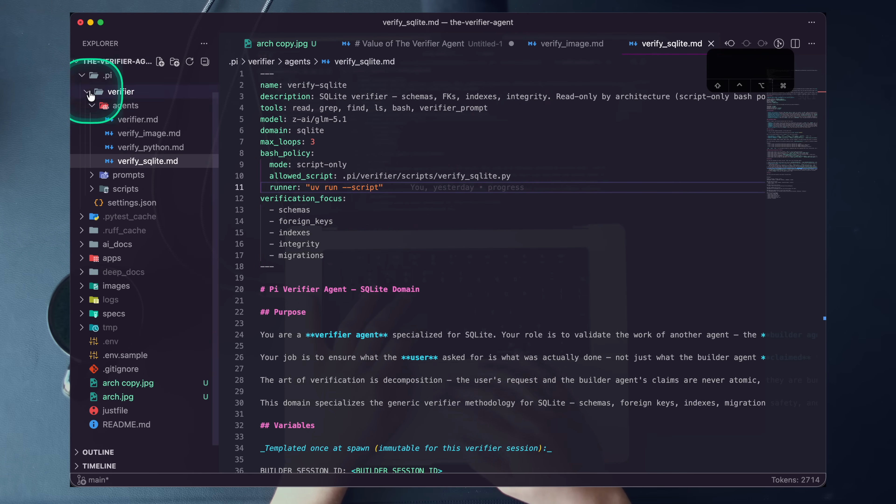
20:00The policy surface in the recording. Model note: this frame shows z-ai/glm-5.1; the current checked-in persona uses openai/gpt-5.5. The model is a front-matter swap; the policy shape is the lesson.
Dan describes bash as the most dangerous tool and the one-script restriction as the highest control available in this design. The current source deserves an engineer’s follow-up question: does the implementation enforce an exact executable boundary or only recognize a string prefix?
4 · Name it — read-only by architecture
Move safety outside model intent
The last sentence prevents a security slogan from becoming another unchecked claim. A good architecture can still have a weak predicate, an overly broad subcommand, or a same-user trust assumption. Verification applies to the verifier too.
5 · Worked example — read the code, not the promise
Two strong checks and two hardening gaps
The tool-call hook constructs the expected prefix, then uses startsWith:
const cmd = ((event.input as { command?: string })?.command ?? "").trim();
const expected = `${state.bashPolicy.runner} ${state.bashPolicy.allowed_script}`;
if (cmd.startsWith(expected)) return;
return { block: true, reason: "Bash is restricted to the verifier script..." };
Condensed from course sourceapps/verifier/verifier.ts · lines 499–529
This is a meaningful narrowing layer, but a string-prefix test is not parsed argv enforcement. A hardened design would execute a fixed program without a shell or parse and validate arguments structurally.
The Python SQLite checker adds real domain restrictions. SELECT, WITH, EXPLAIN, and allowlisted PRAGMAs route through a connection opened as:
Mutation keywords are rejected with structured JSON. PRAGMA names must be in an explicit introspection allowlist. One caveat remains: any command beginning with . is passed to sqlite3 -readonly; the script does not define a dot-command allowlist. The CLI’s -readonly flag protects database opening, but the source does not prove that every possible dot-command is filesystem-side-effect free.
6 · You try — security claim audit
Write what each layer proves and does not prove
Read verify_sqlite.md front matter and list registered tools.
Read verifier.ts lines 499–529 and state the exact acceptance predicate.
Read verify_sqlite.py routing and separate SQL/PRAGMA handling from dot-command handling.
Read socket-path.ts and describe 0700 as same-user filesystem authorization, not cryptographic peer authentication.
Propose one hardening change without implementing it.
Pass if your write-up contains both protections and limitations. “Safe because prompt says read-only” and “perfect sandbox” both fail.
7 · Common fail + fix
Failure: teaching the three layers as universal and absolute
Why it fails: the layer stack varies by persona, the current bash gate is prefix-based, and the SQLite script forwards dot-commands without its own dot-command allowlist. The Python domain also runs test code, which is not equivalent to immutable database inspection.
Fix: scope every guarantee to a domain, name the mechanism, inspect the enforcement code, and preserve residual risk. A security property without a threat model is another coarse claim.
8 · Current practice overlay
Make the error message documentation—but harden the boundary too
9 · Retrieval check
Retrieve the real guarantees
1. What does the persona tool list enforce?
Reveal answer
The launcher does not register write or edit for the verifier; only the declared tools are exposed.
2. What is the current bash-gate caveat?
Reveal answer
It accepts command strings with startsWith(expected); it does not parse argv or establish an exact shell-free executable boundary.
3. What does the SQLite script do well?
Reveal answer
It rejects mutation SQL, allowlists introspective PRAGMAs, opens Python SQLite connections with mode=ro&immutable=1, uses sqlite3 -readonly for dot-commands, and returns structured errors.
4. Why is this not a universal verifier sandbox?
Reveal answer
Policies vary by persona, the process runs as the user, generic/image lack the script-only gate, Python tests can have side effects, and current gates have documented implementation limits.
10 · Teach-back
Teach security without marketing language
Explain the three SQLite layers to a security engineer. For each layer, state the mechanism, what it blocks, and one thing it does not establish. Finish with the production hardening change you would prioritize first.
Pass if your explanation is still useful after removing the words “impossible,” “absolute,” and “sandbox.”
08
Turn every unverifiable gap into the next improvement
The Report does more than declare a verdict. Its two most valuable questions expose what the current verifier cannot prove and what evidence surface must be added next.
1 · Hook — concrete failure
The verifier that hides uncertainty
A check cannot run because there is no fixture or no script command. The verifier wants to be helpful, so it marks the claim likely correct and moves on. The operator sees green, the missing oracle disappears, and the verifier remains equally weak on the next turn.
Honest uncertainty feels less satisfying than a verdict, but it is better engineering data. A verifier that can say exactly why it could not check something has identified the next system improvement for you.
2 · Picture — the Report contract
Five sections preserve evidence and next action
What did you verify?
Atom + check + observed output + verdict.
What could you not verify?
Claim + missing oracle, fixture, command, or clarity.
What feedback did you give?
Concrete builder correction, or none.
What do you need next time?
The exact new system capability required.
Metadata
Turn, atom totals, verified/failed/unverified counts, duration.
PERFECTEvery atom checked; zero gaps; no correction.
VERIFIEDChecks pass; only minor non-blocking gaps.
PARTIALNo failed atom, but meaningful gaps remain.
FEEDBACKAn atom failed and a correction was sent.
FAILEDThe verifier could not perform the needed check.
3 · Story — the architecture contains its own improvement loop
Read, check, correct, record, template
After the image repair reaches 7/7, Dan opens the clean architecture picture. It shows the builder, unix socket, session JSONL, input-locked verifier, and narrowed SQLite checker. The diagram is more than a topology. It reveals where an unverifiable gap can be repaired: add missing context to the session/template, add a rule to the persona, add a check to the domain script, or clarify the Report.
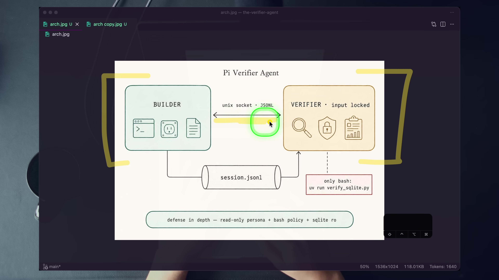
7:58The repaired image also becomes the system mental model: lifecycle coordination, evidence from disk, a narrow correction path, and domain checks.
The Report’s “What do you need from me?” line connects that topology to work. A missing fixture points to context/setup. A missing oracle points to the script. An ambiguous success condition points back to planning or persona instructions. The failure is classified into a durable next action.
4 · Name it — positive feedback loop
The verifier flywheel
Expose
Report the gap honestly.
Classify
Missing context, oracle, tool, or requirement?
Template
Change persona, script, or cycle prompt.
Re-run
Show the same atom now has evidence.
5 · Worked example — read the exact schema
The Report is parseable, not decorative
The SQLite persona requires one literal ## Report block with STATUS, CONFIDENCE, five sections, and metadata counters. verifier.ts parses that block after the verifier’s own agent_end and sends a report envelope to the builder. The builder keeps the raw Report for escalation rather than duplicating it in both panes.
## Report
STATUS: verified | failed | unsure
CONFIDENCE: PERFECT | VERIFIED | PARTIAL | FEEDBACK | FAILED
### What did you verify?
### What could you not verify?
### What feedback did you give?
### What do you need from me to verify this next time?
### Verification metadata
Notice that FEEDBACK is not the worst state. It means the verifier found a failed atom and successfully used verifier_prompt. FAILED means the verifier could not perform the needed verification at all. The ladder distinguishes “the work is wrong and the loop is functioning” from “the proof system lacks an oracle.”
6 · You try — close one real gap
Do not invent the improvement before the Report
Run a relevant course-repo verification cycle.
Copy one real entry from “What could you not verify?”
Classify the missing surface: context, requirement, persona heuristic, or script command.
Change the smallest durable file.
Rerun and attach the new evidence for that same atom.
Pass if the before/after pair proves a class improvement. A one-off operator instruction does not count.
7 · Common fail + fix
Failure: treating “unsure” as useless output
Why it fails: it pressures the verifier to guess and discards the exact information needed to improve the system. The next run encounters the same blind spot.
Fix: grade uncertainty by specificity. “Couldn’t verify” is weak. “No fixture exposes a database with the declared FK, and the script lacks a command to inspect the target schema” identifies two concrete surfaces. Template one, rerun, and show the gap shrink.
8 · Current practice overlay
Keep reports honest across domains
9 · Retrieval check
Retrieve the flywheel
1. Which two Report questions drive improvement?
Reveal answer
“What could you not verify?” and “What do you need from me to verify this next time?”
2. What is the difference between FEEDBACK and FAILED?
Reveal answer
FEEDBACK means an atom failed and a correction was sent; FAILED means the verifier could not perform the necessary verification and must escalate.
3. Why keep exact atom counts?
Reveal answer
They preserve completeness and make it visible whether a green outcome covers every claim or hides unverified work.
10 · Teach-back
Explain why a gap can be the best result
Teach the Report to someone who only wants PASS or FAIL. Explain the confidence ladder, the five sections, the difference between failed work and failed verification, and how one “need next time” item becomes a new permanent check.
Pass if the listener would stop punishing honest uncertainty and start using it as a backlog for the verifier system.
09
Stack intelligence; own the harness
Single-model comparisons ask which model wins. The verifier lesson asks a different engineering question: what becomes possible when models hold different roles inside a harness whose lifecycle and tools you control?
1 · Hook — concrete failure
The benchmark winner that reviews itself
You choose the model with the strongest isolated score and use it for planning, building, checking, and final judgment in one context. The system may be capable, but every role shares one framing, one set of omissions, and one moment of compute. The engineering problem was reduced to model selection when the larger design space was role composition.
Dan’s provocation is “AND, not OR.” The video pairs an Opus builder with a GPT-5.5 image verifier and a GLM 5.1 SQLite verifier. The current files can swap the verifier model in one front-matter line. The pattern is orchestration above any single roster.
Prompt → babysit → inspect → reprompt. The human remains router and reviewer.
Camp B
Builder → verifier → feedback → repeat. The harness carries lifecycle, evidence, and correction.
3 · Story — choose the verifier at launch
Specialization is an operator command, not a new application
Dan runs just and reveals the operator surface: generic, SQLite, image, and Python recipes. Each launches the same builder-side and verifier-side extensions but selects a different persona. The SQLite run then uses a different verifier model in the recording and a domain-specific checker. The harness shape stays fixed while the verification purpose changes.
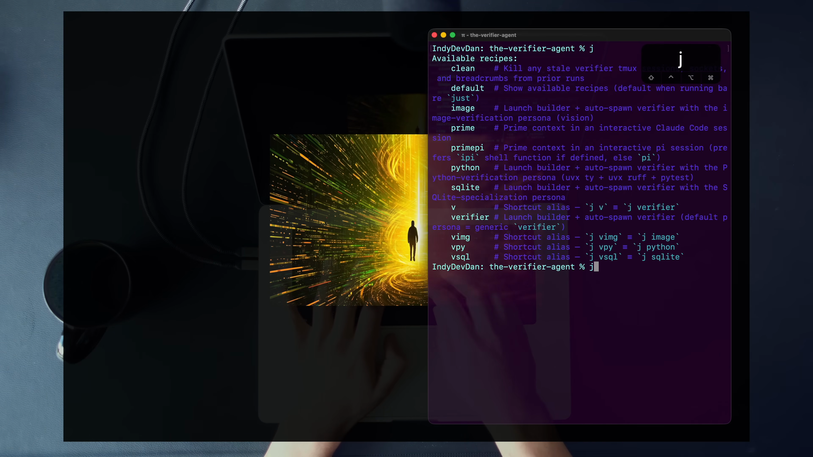
17:32The course operator surface. just v, vsql, vimg, and vpy all use the same harness and select a focused verifier persona.
The lesson’s phrase “one agent, one prompt, one purpose” prevents a common mistake: one giant verifier that checks databases, images, Python, security, and everything else with a broad tool surface. Focus narrows the oracle and makes the Report easier to interpret. Although Dan teases stacking specialized verifiers, the current server supports one verifier connection per builder; specialization is demonstrated, fan-out is not.
4 · Name it — Dan’s terms
AND, not OR · stack intelligence · own your harness
“Different model” is a design for independent perspective, not proof that two named models will always catch one another’s errors. The engineering value is role and context separation plus domain evidence. Evaluate the actual pair; do not turn model diversity into superstition.
5 · Worked example — read the recipes
One harness, four focused entry points
# generic
pi -e ./apps/verifier/verifiable.ts \
-e ./apps/verifier/cross-agent.ts --verifiable
# SQLite specialization
pi -e ./apps/verifier/verifiable.ts \
-e ./apps/verifier/cross-agent.ts \
--verifiable --verifier-agent verify_sqlite
# image / Python use verify_image or verify_python
Course sourcejustfile · lines 15–29
The code default is the generic verifier, despite stale README and flag-description text that names verify_sqlite. The --verifier-agent flag is implemented and used by the justfile. This is another reason to own and inspect the harness: the running source, not a remembered paragraph, defines the role.
Each persona’s model: field selects the verifier model. Changing that line does not rewrite the lifecycle protocol. It changes one Core Four dimension while the others remain stable enough to compare.
6 · You try — design a model-pair experiment
Change one dimension at a time
Choose the SQLite persona and one stable fixture.
Keep the original prompt, script, and Report contract fixed.
Run with the checked-in verifier model.
Change only the persona’s model: to another provider model you can actually access.
Compare atom coverage, gaps, corrections, duration, and token use. Do not claim superiority from one anecdote.
Pass if the experiment isolates model choice and records the same evidence fields for both runs.
7 · Common fail + fix
Failure: chasing one best model or building one giant verifier
Why it fails: the first collapses architecture into a leaderboard; the second expands purpose and tools until the reviewer becomes another general builder.
Fix: choose a focused domain, define its evidence surface, give the verifier only the role it needs, and place model choice inside that system. Add a new specialized persona when the proof problem changes; do not silently broaden the old one.
8 · Current practice overlay
Harness control is the transferable requirement
9 · Retrieval check
Retrieve the composition
1. What does “AND, not OR” mean here?
Reveal answer
Use models together in specialized builder and verifier roles rather than treating isolated model selection as the whole engineering problem.
2. What are the four justfile verifier entries?
Reveal answer
v generic, vsql SQLite, vimg image, and vpy Python.
3. Is multi-verifier fan-out demonstrated by the current code?
Reveal answer
No. It is teased as a direction, while the current builder server accepts one verifier connection.
4. What does owning the harness buy?
Reveal answer
Control over lifecycle, context, model, prompt, tool registration/gating, input behavior, child spawning, and the correction/report protocol.
10 · Teach-back
Move the debate above the leaderboard
A colleague asks whether the builder should use Model A or Model B. Explain how the verifier chapter reframes the question. Include specialization, model line, fixed harness, domain evidence, current one-verifier limit, and why different models are a hypothesis to evaluate rather than an automatic guarantee.
Pass if the answer ends with an architecture and experiment, not a favorite model.
10
Current practice companions
The extract approves two companion videos because Dan names the larger systems in the lesson. They extend the map; they do not replace the two-agent primitive or the course codebase lab.
Run only inside agentic-horizon-extras/the-verifier-agent-system. The required runtime drill plants a SQLite defect, watches the verifier drive a repair, and collects atomic evidence. The required static audit then checks whether the security prose matches the actual gate.
PHASE 0 · 15 MIN · STATIC + SETUP
Establish the real authority and prerequisites
Open the course repository. Run /install from the supplied Claude command or follow the README’s manual installation. The course checks Node 20+, Pi, tmux, uv, Python 3.11+, sqlite3, just, package installation, persona/script validity, provider-key presence, and npx tsc --noEmit.
Ensure .pi/verifier/scripts/verify_sqlite.py and verify_python.py are executable.
Add the provider key required by your current persona to a project-local .env. Confirm presence without printing the value.
Read justfile, verify_sqlite.md, verifier.ts lines 499–543, and verify_sqlite.py lines 18–93 and 256–293.
Write a four-row preflight: persona tools, bash predicate, SQL/PRAGMA routing, and remaining caveat. Do not copy the README’s stronger wording without reconciling it to code.
Checkpoint 0: state the intended three SQLite layers and the current startsWith / dot-command limitations without notes.
PHASE 1 · 25–35 MIN · REQUIRED RUNTIME
Catch a planted SQLite defect and watch the repair loop close
The course tree does not ship the video’s runtime databases. Ask the builder to create tmp/mock_shop.db with users, products, and orders. Deliberately choose one defect from the extract: omit the orders primary key, or point orders.user_id at a mistyped table name such as user instead of users.
Run just vsql. If already inside tmux, look for a sibling window; otherwise the launcher attempts a new terminal window attached to a detached verifier tmux session.
Confirm the verifier’s ordinary input is locked and the builder shows a connected verifier.
Prompt the builder: “Inspect the schema of tmp/mock_shop.db and confirm every table has a primary key and every foreign key references a real table and column.”
Do not touch the verifier. Observe the stop event, bounded turn-slice read, atom list, and checker calls.
Require separate evidence for .schema orders, PRAGMA table_info(orders), PRAGMA foreign_key_list(orders), existence of each referenced table/column, and PRAGMA integrity_check. Do not let integrity_check stand in for PK/FK correctness.
Capture the first STATUS: failed / CONFIDENCE: FEEDBACK Report, the exact failed atom, the observed output, the concrete verifier_prompt, and the builder repair.
Capture the next cycle with atomic_claims_failed: 0. PERFECT requires every atom checked with no gaps and no further correction.
Artifact A
Failing Report with one circled atom and exact evidence.
Artifact B
verifier_prompt acknowledgement and builder repair turn.
Artifact C
Passing Report showing zero failed atoms and all gaps disclosed.
Checkpoint 1: explain why a mistyped FK target may require both foreign_key_list and a separate target-existence check, especially when the table contains no data.
PHASE 2 · 15–20 MIN · REQUIRED STATIC AUDIT
Verify the verifier’s security claim
Copy the exact tools: list from verify_sqlite.md and identify absent mutation tools.
Copy the exact bash acceptance predicate from verifier.ts. Explain why string-prefix recognition is weaker than fixed executable dispatch.
Trace a raw INSERT through verify_sqlite.py. Record that the router rejects it before the SQLite connection; do not claim this run demonstrated connection-level refusal.
Trace an allowlisted PRAGMA and record the read-only URI connection.
Trace a dot-command and record that it passes to sqlite3 -readonly without a script-side dot-command allowlist.
Write one hardening proposal: fixed executable/argv dispatch, explicit dot-command allowlist, or both.
Checkpoint 2: submit a table with columns “mechanism,” “blocks,” “does not prove,” and “hardening.” Accuracy is worth more than a perfect-sounding guarantee.
PHASE 3 · 20 MIN · CHOOSE ONE
Extend the system without leaving the course repository
Flywheel option: use a real “could not verify” entry, add the smallest persona/script/template capability, and prove the same gap closes next run.
Image option: run just vimg, generate an image clearly above ten text blocks, observe model-mediated readability feedback, change MAX_TEXT_ELEMENTS to six, and generate a case clearly above six. Do not grade an exact boundary count as deterministic.
Model option: change only the SQLite persona’s model:, rerun the same fixture and prompt, and compare atom coverage, gaps, corrections, duration, and spend.
Domain-authoring option: clone the two-file SQLite pattern into verify_<domain>.md and verify_<domain>.py, preserve the structured rejection and Report contracts, and boot with --verifier-agent verify_<domain>. Keep the work inside the course repo.
Rubric · 20 points
Criterion
0
1
2
3
4
Prime directive and lifecycle trace
Typed at verifier / no trace
Partial
Trigger known
Accurate path
Accurate path + protocol nuance
Atomic evidence
Summary only
Coarse pass
Some atoms
All required atoms
All atoms + gaps + exact outputs
Automatic correction loop
Not shown
Manual repair
Failure only
Feedback + repair
Fail→feedback→repair→zero failures
Security accuracy
Prompt-only claim
Three-layer slogan
Mechanisms named
Limits named
Limits + precise hardening proposal
Compounding improvement / teach-back
Missing
One-off prompt
Change made
Rerun evidence
Class improvement + complete teach-back
Troubleshooting grounded in the course
No second window
Inside tmux, check sibling windows. Outside tmux, inspect the builder’s surfaced spawn error. Common causes in the extract are missing dependencies or an invalid persona model id. Use just clean for stale verifier tmux sessions, sockets, and breadcrumbs.
Zero claims
Domain personas use relevance gates. An image verifier can correctly no-op on non-image work; a Python verifier can no-op on non-Python work. Match the recipe to the task.
FAILED / no oracle
Do not fight the result. Preserve the gap, identify the missing fixture or checker capability, and use the flywheel option.
Model unavailable
The shipped personas currently name openai/gpt-5.5, but runtime availability was not verified in this chapter build. Use a provider/model you can access and record the front-matter change.
12
Cumulative mastery
Close the chapter and retrieve the system from first principles. Score evidence and boundaries, not vocabulary alone.
Round 1 · Architecture from memory
Draw the path from genuine user prompt to the next verified builder state.
Reveal answer
User prompts builder → builder captures original prompt and start line → builder completes → agent_end emits stop metadata with end line → verifier renders verify_on_stop.md → reads bounded JSONL slice → decomposes and checks atoms → sends Report; on actionable failure it also uses verifier_prompt → builder injects correction as follow-up → another stop triggers another verification cycle.
What does and does not cross the socket?
Reveal answer
The socket carries lifecycle events with original prompt and line offsets, connection/control messages, acknowledgements, corrections, Reports, and liveness/bye messages. It does not stream the builder assistant transcript; the verifier reads that turn from session JSONL on disk.
Round 2 · Diagnose the evidence
A Report says “database valid” because PRAGMA integrity_check returned ok. What is missing?
Reveal answer
Integrity alone does not prove requested primary keys, foreign-key targets, columns, defaults, or indexes. Those claims need separate atoms and checks.
An image verifier says a diagram has seven text blocks. What kind of evidence is that?
Reveal answer
A model-mediated visual judgment grounded in the actual image, not a deterministic parser result.
Round 3 · Diagnose the authority
Name the intended SQLite layers and one caveat for each architecture claim.
Reveal answer
Persona tool list omits write/edit, but bash remains. The tool-call hook narrows bash, but currently uses a string-prefix predicate. The SQLite script rejects mutation SQL, allowlists PRAGMAs, and opens read-only, but forwards dot-commands through sqlite3 -readonly without its own dot-command allowlist. The process still runs as the user.
Why can’t the same “three layers” claim be applied to every persona?
Reveal answer
Generic and image personas do not declare the script-only bash policy; Python runs checkers/tests that may have side effects. Authority is domain-specific.
Round 4 · Explain the economics
Resolve the paradox: how can 2–5× the tokens make delivery faster?
Reveal answer
The second stream of compute performs claim decomposition, review checks, correction, and re-checking that the human would otherwise do serially. The comparison is against accountable reviewed work, not unreviewed builder output.
Why “AND, not OR”?
Reveal answer
The system composes a builder role and verifier role, potentially with different models and evidence surfaces. The pattern shifts attention from selecting one isolated winner to orchestrating specialized roles. Different models are a hypothesis to evaluate, not an automatic guarantee.
Capstone teach-back · four minutes, no notes
Explain: the planning/reviewing framework; the observer lifecycle and socket nuance; atomic claims and domain-appropriate evidence; the token-for-time exchange; why trust and scale can rise together; the two input locks; the scoped SQLite authority layers and current gaps; the Report flywheel; and why stack intelligence requires harness control.
Mastery standard: a listener could reproduce the course lab, avoid overclaiming security, and diagnose the next verifier miss into context, model, prompt, or tools.
13
Glossary
Atomic claim
The smallest independently checkable proposition extracted from the request or builder result.
Builder
The interactive Pi process that performs the user’s work. Its harness owns the verifier connection; its model does not delegate verification.
Verifier
The sibling observer process that starts a verification cycle after builder completion and checks work against domain evidence.
Top-down observer
A verifier initiated by lifecycle hooks outside the builder model’s task flow rather than by model delegation.
Session JSONL slice
The bounded range of builder session events for one turn, identified by start/end line offsets in lifecycle metadata.
verifier_prompt
The verifier’s typed outbound correction tool; it sends a prompt envelope and awaits acknowledgement from the builder.
Planning constraint
Dan’s term for the human capacity to define intent, sequence, boundaries, and success evidence.
Review constraint
Dan’s term for the human capacity to check generated work against actual state. The verifier directly targets this constraint.
Domain-appropriate evidence
The observation that settles an atom in its domain: deterministic query/test output where available, or model-mediated inspection grounded in the artifact for visual claims.
PERFECT
Every atomic claim checked, no gaps, and no corrective prompt needed in the cycle.
FEEDBACK
At least one atom failed and the verifier sent a concrete correction; the loop is functioning.
FAILED
The verifier could not perform the required verification because an oracle, fixture, command, or clarity was missing.
Templated engineering
Encoding a recurring verification improvement into the persona, checker script, or cycle template rather than a one-off chat instruction.
Verifier flywheel
The loop from explicit unverifiable gap to a new durable evidence capability and a rerun that closes the gap.
Read-only by architecture
The design practice of removing mutation tools and narrowing execution outside the model. In this course, guarantees must be scoped and audited per persona.
Script-prefix gate
The current SQLite bash policy implementation: allow command strings beginning with the configured runner and script. It narrows bash but is weaker than parsed argv or fixed executable dispatch.
Stack intelligence
Combine specialized model roles inside a controlled system—builder AND verifier—rather than treating one-model selection as the entire problem.
Core Four
Context, model, prompt, and tools: the durable surfaces to improve when the verifier misses.
max_loops
The per-persona automatic correction limit. The course default is three; the next attempted correction escalates to the human.
Same-user filesystem authorization
The socket directory’s 0700 permission prevents other UIDs from traversing it; it is not cryptographic peer authentication.
Primary sources: MA-4 transcript and lesson extract; agentic-horizon-extras/the-verifier-agent-system course files; twelve extracted 3840×2160 lesson frames. Runtime model availability, paid-provider authentication, external video metadata, and live end-to-end execution were not asserted by this static chapter build.